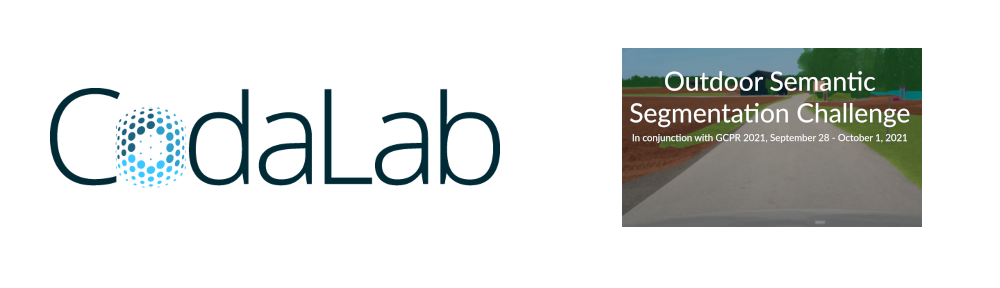

1st Workshop on Scene Understanding
in Unstructured Environments
In conjunction with the DAGM GCPR 2021, September 28
Registration is now open at virtual21.dagm-gcpr.de
Important Dates
Competition ResultsNew!
The Outdoor Semantic Segmentation Challenge concluded on August 15 and the 3 best-performing are invited to present their results at the 1st Workshop on Scene Understanding in Unstructured Environments on September 28, 2021. The following three teams are invited for participation:
We want to thank all active participants for taking part in this competition. The leaderboard containing all submissions is available here. We invite all participants to visit the virtual workshop on September 28.
The registration for the virtual DAGM GCPR 2021 is now available at https://virtual21.dagm-gcpr.de. Don't forget to select the "Workshop on Scene Understanding in Unstructured Environments" as your "Interest" during registration. This allows us to estimate the event attendance and prepare accordingly. The registration for the virtual DAGM GCPR 2021 is free.
Technical Report SubmissionNew!
Finalists of the Outdoor Semantic Segmentation Challenge can submit a written technical report. The submissions will be processed via CMT, follow this link to the CMT submission page. We ask submissions follow the same format guidelines as used by the regular submissions for the DAGM GCPR 2021. Please check the "Submission" section of the GCPR website for more details. Our review process differs by being single blind. This means, that we do not require to anonymize the author and his affiliation in the submission.
Here is a brief overview about the general form of the written technical report:
Outdoor Semantic Segmentation Challenge
As part of the first workshop on scene understanding in unstructured environments we introduce the outdoor semantic segmentation challenge. The task is to develop an algorithm for a fine-grained vegetation and surface detection in an unstructured outdoor environment. The training data is provided by the TAS500 dataset. Participants are invited to send their predictions on the test set. All submissions are added onto our public leaderboard.
The best submissions will be invited so present their solution as part of the workshop at the DAGM GCPR 2021.
Evaluation
The submitted predictions are going to be evaluated on the TAS500 test split. For evaluation we will use the mean Intserection over Union (mIoU) metric. In addition, we will also display the novel Boundarry Jaccard (BJ) metric for each submission. The mean Boundary Jaccard (mBJ) focuses on evaluating pixels along class boundaries. This can be more relevant for fine-grained semantic segmentation tasks such as the scenes shown in the TAS500 dataset. Both the mIoU and the mBJ are highly correlated metrics. The final ranking on the leaderboard is done using the mIoU metric.
Codalab Competition
The Outdoor Semantic Segmentation Challenge is hosted on Codalab. CodaLab is an open-source web-based platform to collaborate on challenging resarch datasets. The public leaderboard and the automatic submission evaluation for this workshop challenge is hosted there.
We use Codalab's competition forum for discussions regarding the competition.
Download
The challenge uses version 1.1 of the TAS500 dataset. The TAS500v1.1 dataset is available for download here.
More information on the TAS500 dataset is available on the project page.
Submission
All submissions are handled in the Codalab Competition. For more information visit the Participate section on Codalab.